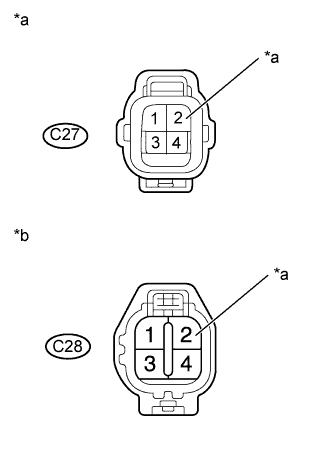

DTC P0037 Слабый ток в цепи управления подогревателем кислородного датчика (датчик 1 ряда 2) |
DTC P0038 Сильный ток в цепи управления подогревателем кислородного датчика (датчик 2 ряда 1) |
DTC P0057 Слабый ток в цепи управления подогревателем кислородного датчика (ряд 2, датчик 2) |
DTC P0058 Сильный ток в цепи управления подогревателем кислородного датчика (ряд 2, датчик 2) |
DTC P102D Характеристики цепи подогревателя датчика O2 (заедание во включенном положении датчика 2 ряда 1) |
DTC P105D Характеристики цепи подогревателя датчика O2 (заедание во включенном положении датчика 2 ряда 2) |
| № DTC | Условие обнаружения DTC | Неисправный участок |
| P0037 P0057 | Ток подогревателя подогреваемого кислородного датчика (ряд 1, 2, датчик 2) менее 0,3 A (логика диагностирования за 1 поездку). |
|
| P0038 P0058 | Ток подогреваемого кислородного датчика (ряд 1, 2, датчик 2) более 2 A (логика диагностирования за 1 поездку). |
|
| P102D P105D | Ток подогревателя подогреваемого кислородного датчика (ряд 1, 2, датчик 2) превышает заданное значение, когда подогреватель не работает (логика диагностирования за 1 поездку). | ECM |
| 1.ПРОВЕРЬТЕ ПОДОГРЕВАЕМЫЙ КИСЛОРОДНЫЙ ДАТЧИК (СОПРОТИВЛЕНИЕ ПОДОГРЕВАТЕЛЯ) |
Проверьте подогреваемый кислородный датчик (Нажмите здесь).
|
| ||||
| OK | |
| 2.ПРОВЕРЬТЕ НАПРЯЖЕНИЕ НА КОНТАКТЕ (+B ПОДОГРЕВАЕМОГО КИСЛОРОДНОГО ДАТЧИКА) |
|  |
Отсоедините разъем подогреваемого кислородного датчика.
Измерьте напряжение в соответствии со значениями, приведенными в таблице.
| Контакты для подключения диагностического прибора | Положение переключателя | Заданные условия |
| C27-2 (+B) - масса | Зажигание включено (IG) | 11 - 14 В |
| C28-2 (+B) - масса | Зажигание включено (IG) | 11 - 14 В |
| *a | Вид спереди разъема со стороны жгута проводов: (к подогреваемому кислородному датчику ряда 1) |
| *b | Вид спереди разъема со стороны жгута проводов: (к подогреваемому кислородному датчику ряда 2) |
Подсоедините разъем подогреваемого кислородного датчика.
|
| ||||
| OK | |
| 3.ПРОВЕРЬТЕ ЖГУТ ПРОВОДОВ И РАЗЪЕМ (ПОДОГРЕВАЕМЫЙ КИСЛОРОДНЫЙ ДАТЧИК – ECM) |
Отсоедините разъем подогреваемого кислородного датчика.
Отсоедините разъем ЭБУ.
Измерьте сопротивление в соответствии со значениями, приведенными в таблице ниже.
| Контакты для подключения диагностического прибора | Условие | Заданные условия |
| C27-1 (HT1B) - C37-12 (HT1B) | Всегда | Менее 1 Ом |
| C28-1 (HT2B) - C37-13 (HT2B) | Всегда | Менее 1 Ом |
| Контакты для подключения диагностического прибора | Условие | Заданные условия |
| C27-1 (HT1B) или C37-12 (HT1B) - масса | Всегда | 10 кОм или более |
| C28-1 (HT2B) или C37-13 (HT2B) - масса | Всегда | 10 кОм или более |
Подсоедините разъем ECM.
Подсоедините разъем подогреваемого кислородного датчика.
|
| ||||
| OK | ||
| ||
| 4.ПРОВЕРЬТЕ ЖГУТ ПРОВОДОВ И РАЗЪЕМ (ПОДОГРЕВАЕМЫЙ КИСЛОРОДНЫЙ ДАТЧИК - ИНТЕГРИРОВАННОЕ РЕЛЕ № 1) |
Отсоедините разъем подогреваемого кислородного датчика.
Извлеките интегрированное реле № 1 из блока реле моторного отсека.
Измерьте сопротивление в соответствии со значениями, приведенными в таблице ниже.
| Контакты для подключения диагностического прибора | Условие | Заданные условия |
| C27-2 (+B) - 1B-4 | Всегда | Менее 1 Ом |
| C28-2 (+B) - 1B-4 | Всегда | Менее 1 Ом |
| Контакты для подключения диагностического прибора | Условие | Заданные условия |
| C27-2 (+B) или 1B-4 - масса | Всегда | 10 кОм или более |
| C28-2 (+B) или 1B-4 - масса | Всегда | 10 кОм или более |
Установите интегрированное реле № 1.
Подсоедините разъем подогреваемого кислородного датчика.
|
| ||||
| OK | ||
| ||